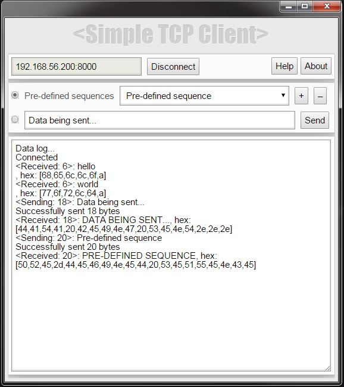

I created this app with just one purpose: to learn how to create a Chrome app. I needed a simple way to test the custom communication protocol of a TCP server running on a PIC32-based IoT device I was working on. There were, ofcourse, easier ways to do this but they wouldn't have been as much fun :-)
This application also supports sending pre-defined sequences over the network.

I followed the tutorial in this Google Code Lab -- BUT -- I found the example code in that code lab a little complex for a complete n00b such as myself, so in case you feel the same way, you might find the tutorial for my Chrome ToDo app useful.